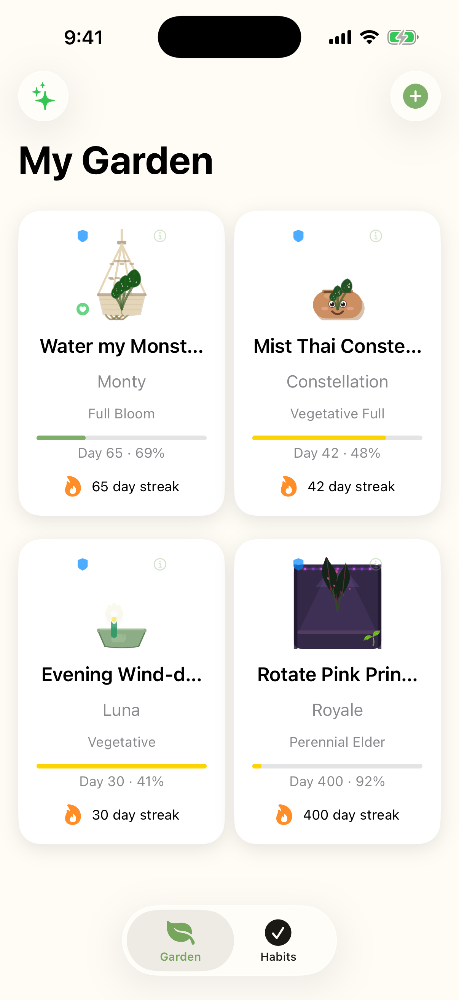

Pick a habit and a plant.
Add the routine you want to keep, then choose the plant that will carry its progress.
Habit tracking for visual people
PetalKeep turns your daily routines into living plants. Keep your habit and watch it bloom. Neglect it and it wilts. 25+ species, each with their own story.

The loop
Add the routine you want to keep, then choose the plant that will carry its progress.
PetalKeep tracks your streak and maps it onto distinct visual stages from dormant seed to perennial elder.
Your garden is a direct record of what you have done, not a decorative progress bar wearing leaves.
Plants with personality
Develops fenestration holes the longer your streak runs.
Opens its bloom only during evening check-ins.
Grows toward one dramatic goal-day bloom, then never blooms again.
Snaps shut the moment you complete your habit.
Visual consequences
Miss a day and you will see it: early wilt first, then drooping leaves, then scorched edges. Severe neglect can move a plant back through growth stages. Forgiveness is always available, but the garden remembers enough to make showing up matter.
Not 21 days
PetalKeep's goal mode centers on the research-backed idea that a new behavior often takes closer to 66 days to become automatic. Set a target, grow toward it, and let the finish line feel visible.
One purchase
No subscription. No premium tier. No ads. Buy PetalKeep once and get the whole garden: every plant, pot style, streak shield, recovery state, and perennial milestone. Your data stays on your device.